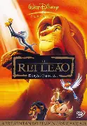
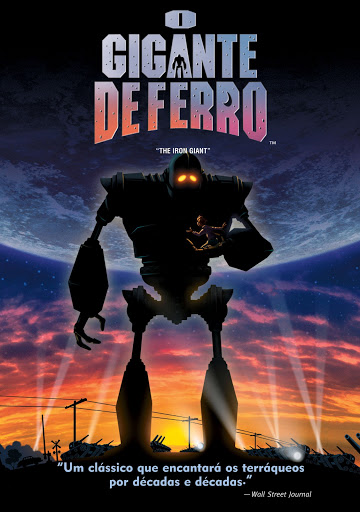

formulario
#top
animora
pagina sobre animações e suas historias
As animações são uma
forma de dar vida e movimento
desenhos.Elas podem ser ultilizadas
para criar transições,mudanças de posição
e efeitos visuas.
Existem varios tipos de
animação entre eles 2d,3d,tradicional,
stop motion e tambem a por computador.
Esses filmes são produzidos
por varios estudios entre eles walt disney,
sony pictures animation,waner bros animation,
pixar animation studios e etc.
Rei Leão(1999)

Rei Leão conta a história de Simba, um jovem leão que precisa enfrentar a perda do pai e o plano de seu tio Scar para tomar o poder. Ao crescer, Simba retorna para recuperar seu lugar como rei e salvar seu reino.
Durante sua jornada, ele faz novos amigos e aprende importantes lições sobre coragem e responsabilidade.
No final, Simba enfrenta Scar e luta para restaurar a paz e o equilíbrio nas Terras do Reino.
O Rei Leão se tornou marcante por combinar uma história emocionante com personagens inesquecíveis, músicas memoráveis e importantes lições de vida.
O filme acompanha Simba, um jovem leão que precisa enfrentar a perda do pai, superar a culpa e assumir seu lugar como rei.
Essa jornada de amadurecimento faz com que muitas pessoas se identifiquem com o personagem, principalmente por abordar temas como família, responsabilidade, coragem e autoconhecimento.
A viagem de Chihiro(2001)

A Viagem de Chihiro conta a história de Chihiro, uma menina que entra em um mundo mágico onde seus pais são transformados em porcos.
Para salvá-los e voltar para casa, ela precisa trabalhar em uma casa de banhos para espíritos e enfrentar vários desafios.
A viagem de Chihiro é marcante porque mistura fantasia, aventura e emoção, além de mostrar o amadurecimento de Chihiro. O filme também se destaca pelos personagens, pela animação e pelas mensagens sobre coragem, amizade e identidade.
Além disso, sua história é cheia de mistérios e momentos emocionantes.
Por isso, é considerado um dos filmes de animação mais importantes e memoráveis.
O Gigante de Ferro(1999)

O Gigante de Ferro conta a história de Hogarth, um garoto que encontra um enorme robô vindo do espaço.
Apesar de seu tamanho e aparência assustadora, o Gigante é gentil e não entende o mundo dos humanos.
Hogarth se torna amigo dele e ensina sobre amizade, respeito e a diferença entre o bem e o mal.
Porém, um agente do governo chamado Kent acredita que o robô é uma ameaça.
Os militares decidem destruí-lo, fazendo com que o Gigante precise escolher entre lutar ou proteger as pessoas.
No momento decisivo, ele escolhe salvar a cidade, mostrando que não precisa ser uma arma.
A história transmite uma mensagem sobre amizade, escolhas, coragem e a importância de escolher fazer o bem.
O Gigante de Ferro se tornou marcante por sua amizade com Hogarth e pela emocionante escolha de se sacrificar para salvar as pessoas.
Ele mostra que, mesmo sendo criado como uma arma, pode escolher ser um herói e fazer o bem.
voltar para a pagina